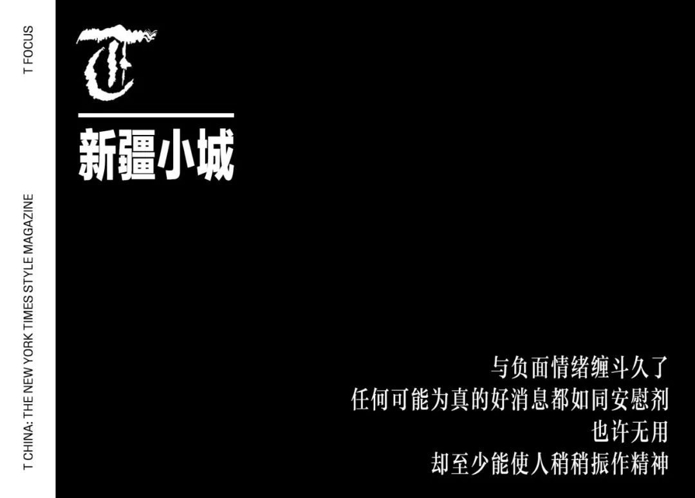
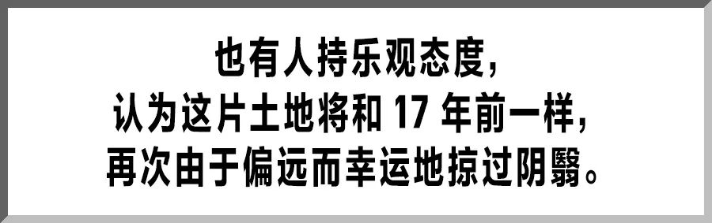
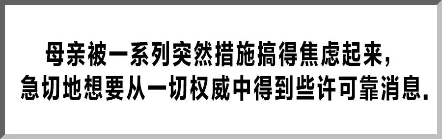
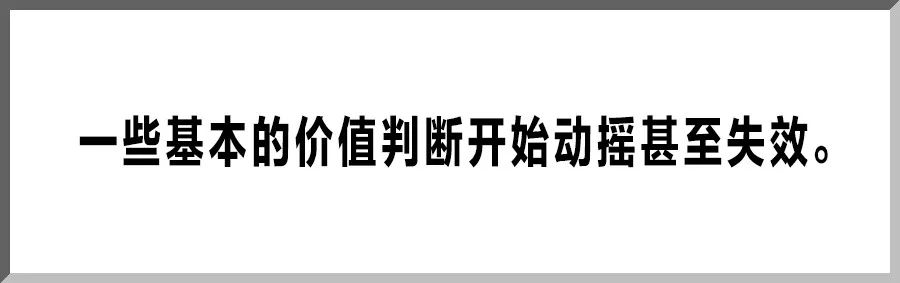
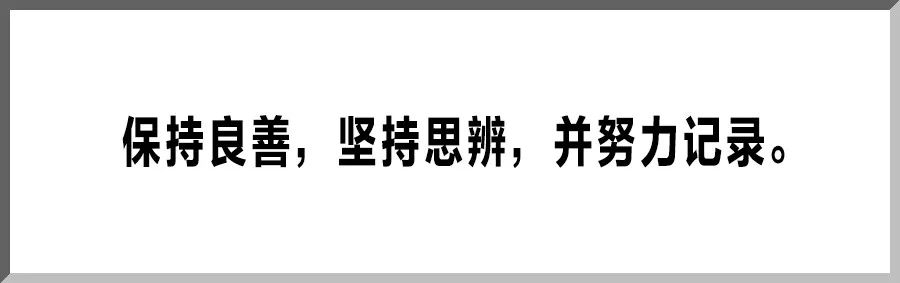

记者观察|中国式防疫 一个山东县城的“防控战”–专题-中国经营网
原文链接 备份链接 记者观察|中国式防疫 一个山东县城的“防控战” 2020-02-02 23:33 作者：陈茂利 来源：中国经营网 本报记者 陈茂利 山东报道 “通知我要求带着房产证和行车证来录入信息。”山东省某县城一小区住户告诉《中国 …

这是系列报道的第五篇，发自新疆小城的「个人志」。17 年前，这座城市曾侥幸躲过「非典」，而 17 年后，在这场「新冠肺炎」疫情面前，乐观幻灭了，人人自危且心痛。以此为切口，我们想知道，中国人是从这场疫情开始才失去了乐观的能力吗？答案显而易见。这也是疫情发展到现阶段的一个重要影响：人们对日常生活秩序的怀念、对牺牲者命运的共情和对前途的巨大怀疑 —— 这将是一场没有悬念的胜利，但谁也不知道这需要我们每个人支付怎样的代价 —— 一种脱力感正如同病毒般大肆侵袭每一个幸存者的心智。很难说我们能提供怎样的参考，但我们准备如实记录这样的时刻。
回到这个西北边陲小城后的第一个周末距离除夕恰好还有整整一周时间，市场里的年节气氛正值顶点：行人摩肩接踵，小贩用力招呼。采购年货回家的路上空气湿润，下午天蓝得耀眼。两个骑马的哈萨克青年从眼前经过 —— 这在西北的城市里也并不常见。他们在马背上坐得笔直，蹄声踩在斑马线上，穿过车流，随后双腿急夹马腹，很快消失了。

也正是从那个周末起，有关新型冠状病毒肺炎的报道激增，有亲戚开始在家族群中转发疫情最新动态和防护措施。也有人持乐观态度，认为这片土地将和 17 年前一样，再次由于偏远而幸运地掠过阴翳。小姨一家仍准备按照原计划去西安旅游过年，在她看来是大家有些反应过度了。然而随着疫情的蔓延和对病毒传染性的了解，这种乐观很快幻灭了。1 月 23 日，武汉封城，新疆首次确诊 2 例输入型「新型肺炎」病例，小姨终于在那天决定退票。
除夕那天，家里早早准备好了年夜饭。春晚开始前，我和父母已经坐在电视机前，各自在微信上认真地编辑拜年问候的信息，希望语言真的具有现实的效力。零点过后，有人在小区点了一挂两千响，巨大而突兀的鞭炮声过了很久才结束，之后窗外便安静了。

假期延长了，但父亲还需要去值班，而家里的一次性口罩只剩下十几个。听说城郊一家药店新进了一批口罩，我们决定去碰碰运气。与负面情绪缠斗久了，任何可能为真的好消息都如同安慰剂，也许无用，却至少能使人稍稍振作精神。
然而车开到小区门口才得知，从前一天起，各小区开始限制车辆出入，大门上锁后钥匙统一交由社区管理，只能寄渺茫的希望于附近几家药店。但正如我们所料，口罩酒精仍是售罄，只有一家表示可以先登记联系方式，到货后发信息通知。
药店外，一辆警车从人行道上迎面缓缓开来，断断续续地向路上步履匆忙的行人喊话，让大家尽快回家不要在街上逗留。驶过我们时警车停了下来，开车的民警摇下车窗询问情况。放倒的副驾驶座上，一个穿着制服的年轻人正在闭目休息。母亲被一系列突然措施搞得焦虑起来，急切地想要从一切权威中得到些许可靠消息，于是追问民警交通管制还要持续多久，上班通勤怎么办。民警有些无奈，表示他也不清楚，让我们回家等通知。

毫无办法，只能待在家里守着来自疫情前线和各地的最新动态。网络与现实的各个层面不断上演着角力。一边是层出不穷的质疑，另一边是迟缓模糊的回应，个体的声音在其中被裹挟、支配、放大，直到最终被淹没。所谓「真相」或者「说法」似乎可以隐约窥见，但要真正触达则几近一种奢望。出离愤怒和担忧惊惧逐渐变成常态体验。恍惚等到再次下楼买菜时才发现，小区大门已经完全封闭，上面贴着附近几家超市和药店的电话。铁门外，一位带着红袖章的社区工作人员拎着喷壶走过，在无人的街道上喷着消毒水。
现在的小区像是在进行一场大型感官剥夺实验，窗外安静得诡异。有时新闻和书看得眼花，便倚在阳台看鸟。不远处有几户平房，我刚回来的时候，一个正在搭建二层，现在已经停工；另一个不知何时又加高了一层，屋顶的鸽房还在。没有鸽哨声，几只鸽子偶尔懒懒地盘旋两下就停在近处的电线上。
再有就是乌鸦。我家附近有间友谊医院，印象最深的是医院所在的弧形街道两旁年岁长久的垂柳，上面落满了乌鸦。小时候身体病弱，常来问诊，也曾经两次住院。白天，树上的叫声在市井喧闹中并不响亮，但到了晚上，即便只有一只乌鸦张开了它细长的喙，那叫声也能穿透住院部临街的墙壁，让生病的人听得酸涩。近几年乌鸦活动的范围扩大了，小区上空也经常盘旋着鸦群。那些黑色的剪影和叫声，正在傍晚的天空下吸引着人们过剩的注意力。

各种信息仍在不断涌来，其中坏消息似乎有所减少。不知是希望真的和春天一起来了，还是头顶的滤网又被密织了几层。一些基本的价值判断开始动摇甚至失效。这种感觉糟糕透了，好像溺水或者梦魇，在一片混沌中被一种无形的东西拘压着，使人感到窒息和无力。红色和灰色的惊叹号每在屏幕上出现一次，便又向深渊更深处坠去一些。
李文亮医生的逝去让我想起鲸落。在海洋中死去的鲸鱼不断下沉，直至落入数千米深的海底。在这个漫长的过程中，无数海洋生物渐次赶来接受它馈赠，使它庞大的躯体成为一片在死亡中诞生的绿洲。他终将成为海底的一座沙丘，但他不该也不能被遗忘。

「使人民彼此完全一样，用同样的训诫与规则支配全体人民的思想与行动 …… 中国人在这方面取得的成功已然超乎于此，然而他们的结果却是如此糟糕 …… 」当我们讨论群己权界时发现，穆勒在一个半世纪以前所言，如今看来仍不免老辣。无论出于何种考量，即使能够限定人们所相信和表达的内容，也无法阻止思想与情感的产生，对此视而不见或加以掩盖则是无用甚至危险的。「国家之败，由官邪也；官之失德，宠赂章也。」当下个体所能做的非常有限但极其重要 —— 保持良善，坚持思辨，并努力记录。好在我们之中总不乏持续这样做的人。
前一段时间，小区每到下午便开始广播，有时用汉语，有时用维吾尔语。我听不懂维吾尔语，于是请教我的一位小学同学 Zakiye。她告诉我内容主要是教大家尽量不要出门，外出戴好口罩，每天开窗通风，等等。

Zakiye 就在友谊医院工作，是放疗血液科的一名护士。由于交通管制，现在每天步行上下班。我们不可避免地谈起疫情和医院的情况，她告诉我，目前确诊的病人已在另一家医院集中治疗，友谊医院各个科室正抽调人员分批支援发热门诊，医生护士们都在积极报名。
维吾尔语中，Zakiye 的意思是「体贴，会照顾人的」，这也是我后来才知道的。名字这东西真玄，有时是寄托，也是守则，就如同病人每次呼喊的「医生」、「护士」那样，包含了某种希望。
祝愿他们都能尽快听到自己的名字再次被家人呼唤，重新做回一个普通人。
策划：《T》中文版编辑部
撰文：王博轩
开篇撰文：李森 设计：子慜 编排：Lu Wang


原文链接 备份链接 记者观察|中国式防疫 一个山东县城的“防控战” 2020-02-02 23:33 作者：陈茂利 来源：中国经营网 本报记者 陈茂利 山东报道 “通知我要求带着房产证和行车证来录入信息。”山东省某县城一小区住户告诉《中国 …
原文链接 备份链接 壹 下午五点左右，北京地铁宋家庄站内看不到多少人。我穿过闸机，搭上一趟刚进站的列车，整节车厢里除了一位身着制服的工作人员，没有其他乘客。 这天是大年初二。因为担心城际高铁暂停和高速封路，我急匆匆从天津返回北京。街道 …
原文链接 备份链接 今天是“武汉日常”每日书的第四篇，在孝感的学生写到当地村民自发拦路封村，尽管道路后面的横幅还写着他们希望并且欢迎在外乡亲回家；有在黄石的编剧路过黄石最繁华的步行街，发现那里几乎没有任何动静；有居住在武汉市区自愿帮助陌生 …
原文链接 备份链接 【编者按】首先，祝各位新年安康！ 我们的前方记者正在采访报道新型肺炎疫情，但我们知道，也许你们在更前方。这里，是一位武汉的年轻妈妈除夕发来的日志。中国青年报社正在公开征集原创文字、图片、视频。欢迎通过我们的全媒体平台告 …
原文链接 备份链接 2020年1月23日凌晨2点，武汉市宣布自10时起交通封城，尽管很多人还在睡梦之中，在8个小时的窗口时间内，仍有很多人选择连夜出城。更多的人，则留了下来，有的人别无选择，有的人则担心自己无论去哪里都是潜在的传播者。一位 …